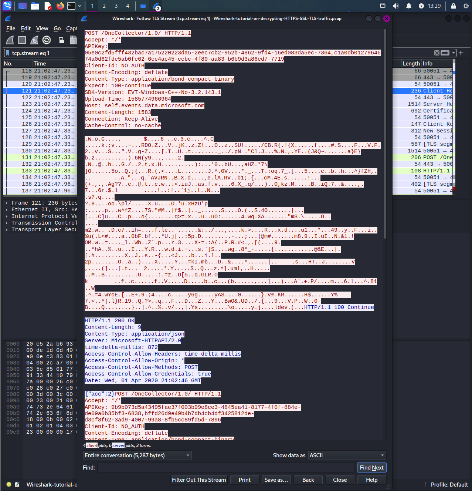
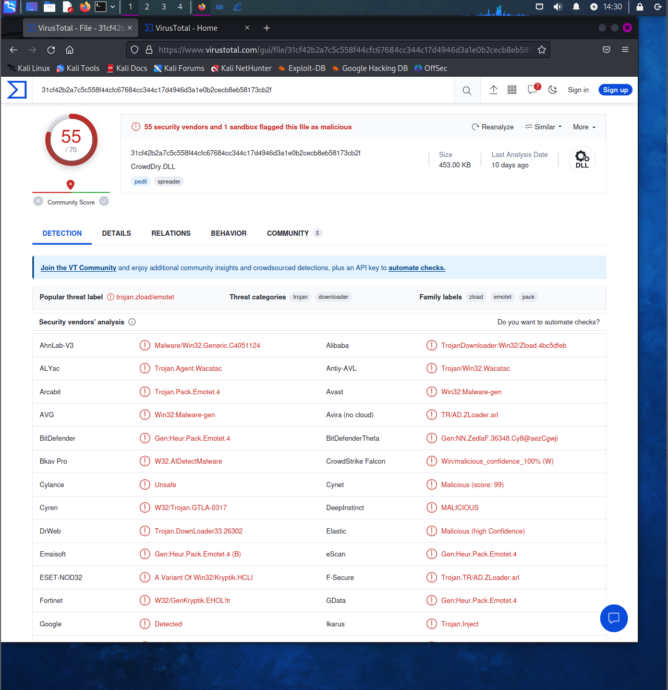
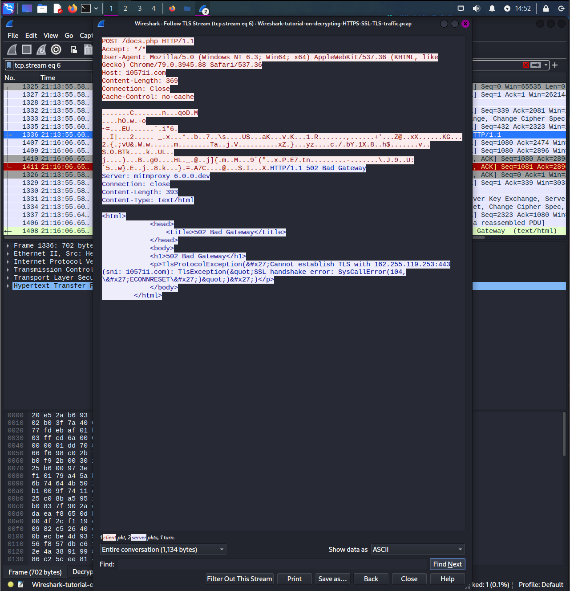

Decrypting HTTP traffic with WireShark
What is Wireshark?
Wireshark is an popular network protocol analyzer/packet sniffer.
It is used to capture and analyze the data packets traveling back and forth on a computer network.
- it is most popularly used to troubleshoot network issues, analyze network traffic, and diagnose problems related to network protocols, performance, and security
- allows you to capture traffic on a network and is present in the form of individual packets for granular analysis.
Some of the features Wireshark includes:
- live traffic/packet capture
- packet dissection
- ability to import/export captured traffic (PCAP)
- robust capture and display filters
- ability to search for packets
- customize and color code packets based on our requirements
What are PCAP files?
PCAP (packet capture) is an API that is used to capture and record network packets from layer 2-7 of the OSI model.
Wireshark utilizes the .pcap file format to capture and store packets for later analysis.
Network traffic captured with Wireshark can be exported or imported in the form of a .pcap file.
This allows analysts to import and analyze network traffic that was captured on another network at a different time.
Wireshark's Interface
Wireshark GUI displays three separate panes or windows.
1st pane displays packets that are being captured. Features include:
- Packet Number
- Time
- Source
- Destination
- Protocol for Packet
- Length is the length of the data contained within a packet
- Info shows information about the packet
- packet dissection
- the order goes from data link layer, network layer, transport layer, maybe session and presentation as well as application layer
- displays the content in ASCII or default hex (configurable)
Decrypting HTTP traffic
This lab that I followed help emulate a scenario where a SOC analyst or a Blue Team Analyst is given a situation or pcap file to inspect to see what went wrong that allowed malware to infect a device.
To start, you can view the packet list by applying a filter that is useful:
Once filtered, right clicking on a packet and follow TCP stream, you can see that the data is encrypted because its an SSL certificate.
You need a key to decrypt HTTPS or SSL traffic.
Since this labs provides the keys already, this is the method you can use to use a SSL decrypting key.
- Goto Edit: Preferences -> Protocols
- TLS -> (Pre)-Master-Secret log filename
- Browse to where it is stored

Once you enable, and retype the filter, you can right-click and follow TLS stream and see that the data is decrypted to be able to see the HTTP requests and metadata underneath.

Now use this filter:
With this, you can see there are multiple requests including GET, POST, but there is a particular GET request that is requesting a dll.

As a malware analyst or threat hunter, you would need to download the contents of the dll as a dll file and analyze it through other utilities or applciations like VirusTotal.
Since it is already decrypted, you want to export it as a file:
- File -> Export Objects -> HTTP Objects
- Click on the packet
- Save onto the desktop
VirusTotal: Dridex
Next, open up a utility for malware analysis like virustotal.
VirusTotal: https://www.virustotal.com/gui/home/upload
Import the file that we have just exported from wireshark of the suspicious packet.
When entered and click search, the information below is displayed:
https://www.virustotal.com/gui/file/31cf42b2a7c5c558f44cfc67684cc344c17d4946d3a1e0b2cecb8eb58173cb2f/details

The information regarding this particular page is referring to the Dridex malware:
CISA Website: https://www.cisa.gov/news-events/cybersecurity-advisories/aa19-339a
Dridex malware is a type of trojan that has been designed for stealing sensitive information from infected computers linked towards financial and personal information.
The malware is primarily spread and exposed to users through popular documents such as Microsoft Office documents or ZIP archive files.
Once downloaded, the computer begins to monitor user behavior, once they attempt to log onto banking sites, it employs techniques of keylogging in order to capture credentials.
This information is then sent to a C2 (command and control) server which is controlled by the attackers.
Through further analysis, you can see there are particular POST requests being made to a particular Destination address to a file called docs.php.
These requests were being made after the malware was downloaded.
After following TLS stream, you can see that this is a C2 server that is going through a MiTM proxy.

You can view the system infected by seeing the source ip which is 10.4.1.101.
Next, typing into the display filter nbns, you can see that the name of the workstation is DESKTOP-U54AJ8K.

With this information, you are able to hand down this information to the relevant teams such as an incident response to start analyzing the infected system and the scope of the infection.